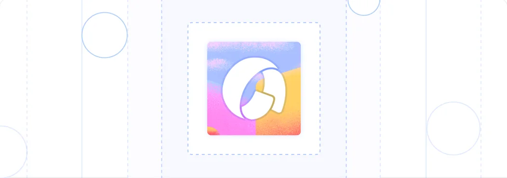
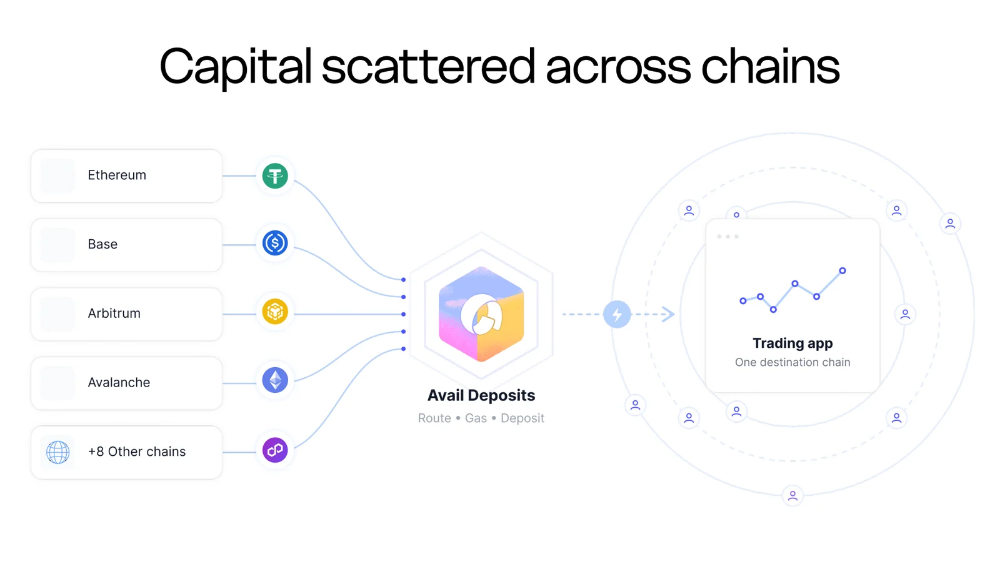
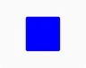
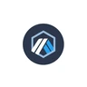
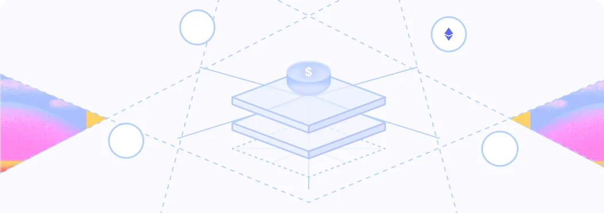
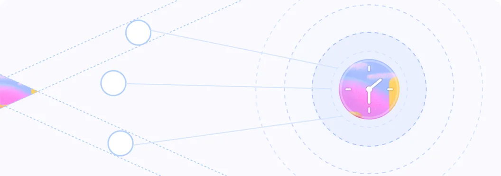
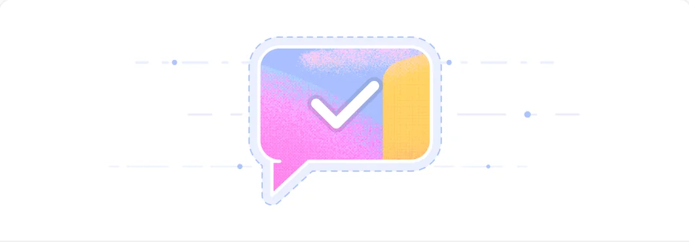

Convert more high-intent traders
Keep users inside the funding journey instead of sending them to external bridges and swaps.
The simplest way for traders to fund their accounts using multiple tokens across supported chains, all in just a few clicks.
Deposit infrastructure that gets users funded and ready to trade.
A trader can arrive with funds spread across different chains and tokens, while your platform accepts one collateral asset on one destination chain.
When traders leave your app to bridge, swap or find gas, every handoff creates another chance for the deposit to be delayed, reduced or abandoned.



Traders see eligible balances across supported chains in one view. They enter what they want to spend or what the app needs to receive, while the flow handles routing, gas and deposit completion.

Keep users inside the funding journey instead of sending them to external bridges and swaps.

Combine multiple tokens across chains and deposit in one flow.

Move users from discovering a market to participating through one embedded funding flow.

Remove common questions around networks, gas, required assets, deposit amounts and funding methods.
Combine balances across supported tokens and chains into one balance.

Enter your spend amount and see exactly what arrives at the destination.
Enter the exact destination amount to receive and see the required input.
Gas is automatically supplied for approvals, swaps and final deposits across supported chains.
100+ currencies, 20+ Payment Methods, 30+ Providers. Offer the best onramp path for every user
Let users fund their account by scanning a QR code from a wallet or exchange.
The deposit remains inside the trading app experience.
Choose the destination chain and asset, define source coverage, match your design system, then copy the generated code and paste it into your frontend to integrate immediately.
Configure the deposit experience around your destination chain, collateral asset and user funding preferences.
Add an embedded cross-chain deposit flow that accepts eligible assets from supported source chains and delivers the required collateral into the destination app. Routing, bridging and swaps happen inside the funding journey.
Exact-in starts with the amount the trader wants to spend and calculates the destination output. Exact-out starts with the exact amount the app needs to receive, then finds the best route across eligible balances and calculates the required input.
The experience can surface supported fiat on-ramp and off-ramp routes alongside crypto deposits, subject to provider, asset and regional coverage.
QR code-based deposits let a trader send funds from a supported external wallet or exchange to a deposit address, after which the flow routes the funds into the required destination asset.
No. The user stays inside the app while the required cross-chain routing is handled within the deposit flow.
Gas required to successfully complete the transaction is handled in the flow, so users do not need to separately acquire the required native gas tokens for each step.
Coverage changes as the network expands. Link users to the live supported chains and tokens documentation for the current list.
Yes. Teams can configure supported chains and tokens and adapt the widget interface to fit the application experience.